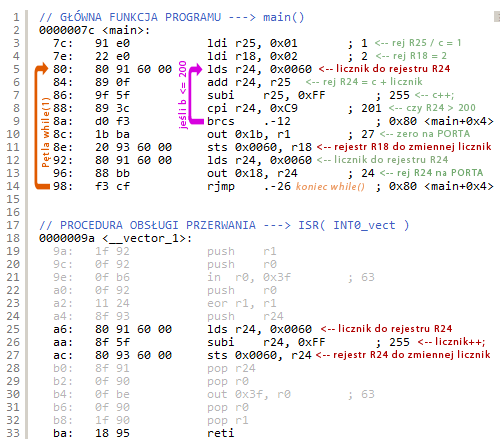

Język assemblera
Języki asemblera (zwyczajowo asemblery) to rodzina języków programowania niskiego poziomu, których jedno polecenie odpowiada zasadniczo jednemu rozkazowi procesora. Języki te powstały na bazie języków maszynowych danego procesora poprzez zastąpienie kodów operacji ich mnemonikami. Dzięki stosowaniu kilkuliterowych skrótów poleceń zrozumiałych dla człowieka pozwala to z jednej strony na tworzenie oprogramowania, z drugiej strony bezpośrednia odpowiedniość mnemoników oraz kodu maszynowego umożliwia zachowanie wysokiego stopnia kontroli programisty nad działaniem procesora. Składnia języka asemblera zależy od architektury procesora, ale i używanego asemblera, jednak zwykle autorzy asemblerów dla danego procesora trzymają się oznaczeń danych przez producenta. Pierwotnie był to podstawowy język programowania procesorów. W wyniku poszukiwania efektywniejszych metod programowania.